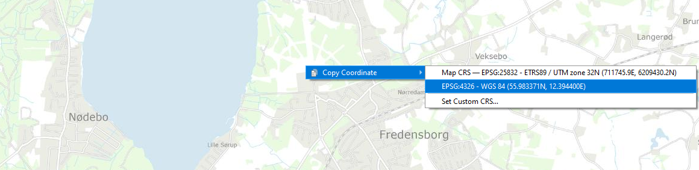

Case: Højdetidsserier
Velkommen til denne lille case, hvor du vil blive klogere på at arbejde med højdetidsserier i FIRE. Undervejs vil vi gennemgå en tænkt livscyklus for et opdigtet 5D-punkt i FIRE. Herunder bl.a. etablering af punkter og vedligeholdelsen af tidsserier for en punktgruppe nær 5D-punktet.
Det er en fordel hvis du er bekendt med det eksisterende nivellement-workflow, som udføres ved hjælp af et sagsregneark i Excel. Dog er vejledningen forholdsvist udførlig, så det burde være muligt at kunne følge med alligevel.
Hvis du undervejs har brug for yderligere hjælp eller forklaring, så er der under Arbejde med højdetidsserier og punktsamlinger i FIRE beskrevet mange af de samme processer som vi kommer til at gennemgå her. Det anbefales at man starter med at læse indledningen dér, som gør det klart hvad der menes med mange af de begreber der bruges.
Derudover kan du altid prøve at kigge i de enkelte kommandoers hjælpetekst med flaget
--help eller slå op under fire niv eller
fire info.
Hent seneste version af FIRE
For at følge trinnene i casen skal du minimum have version 1.8.0 af FIRE. Følg
vejledningen om Opdatering af FIRE til ny version, og kom tilbage hertil når du er
færdig.
Tjek bagefter, at du har FIRE-version 1.8.0 eller højere installeret:
(fire) C:\FIRE>fire --version
fire, version 1.8.0
Ret default databaseforbindelsen
Warning
Inden du begynder, er det vigtigt at sørge for, at du ikke forbinder til produktionsdatabasen ved et uheld. Gør derfor følgende:
Find din FIRE-konfigurationsfil fire.ini og ret default databaseforbindelsen til
test i stedet for prod. Dette gør så du slipper for at skrive --db test
efter hver eneste kommando i denne demo case.
I toppen af filen skal der stå (uden de tre ...):
[general]
default_connection = test
...
Kontrollér desuden længere nede i fire.ini at test-databaseforbindelsen er som følger
(med password og username udfyldt):
[test_connection]
password = ***
username = ***
hostname = exa-x10-r2-c1-scan.prod.sitad.dk
service = FIRETEST.prod.sitad.dk
schema = fire_adm
Kør FIRE-kommandoen fire config for at tjekke, at FIRE kan finde din
konfigurationsfil. Kontrollér at oplysningerne står som beskrevet ovenfor.
Når du er færdig med denne demo kan du, hvis du vil, rette default-forbindelsen tilbage
til prod.
Så går vi i gang!
Opret sag
Opret en mappe et passende sted til denne case, og stil dig i den. Kald den fx HTS_DEMO.
Opret en sag, og kald også den for HTS_DEMO. Giv den evt. også en beskrivelse:
fire niv opret-sag HTS_DEMO "En sag til min demo-case om Højdetidsserier"
Du vil blive spurgt, om du er sikker på om sagen skal oprettes i databasen. Dobbelttjek
at du opretter sagen i test-databasen. Hvis du er ved at oprette sagen i prod, skriv da nej, og følg trinnene under Ret default databaseforbindelsen.
Sags/projekt-navn: HTS_DEMO (2627a3f1-13a4-40bc-8a71-73a83ce4003c)
Sagsbehandler: B294041
Beskrivelse: En sag til min demo-case om Højdetidsserier
Opretter ny sag i test-databasen - er du sikker? (ja/NEJ):
ja
Gentag svar for at bekræfte (ja/NEJ)
ja
Sag 'HTS_DEMO' oprettet
Skriver sagsregneark 'HTS_DEMO.xlsx'
Filen 'HTS_DEMO.xlsx' findes ikke.
Skriver: {'Nyetablerede punkter', 'Filoversigt', 'Parametre', 'Sagsgang', 'Notater', 'Projektforside'}
Til filen 'HTS_DEMO.xlsx'
Færdig!
Info om sagen kan til enhver tid ses ved at slå dens databaseid op (find det i output fra forrige kommando, eller i sagsarket under fanen Sagsgang):
fire info sag 2627a3f1-13a4-40bc-8a71-73a83ce4003c
>>
------------------------- SAG -------------------------
Sagsid : 2627a3f1-13a4-40bc-8a71-73a83ce4003c
Oprettet : 2024-10-16 15:29:27.054865
Sagsbehandler : B294041
Status : Aktiv
Beskrivelse :
HTS_DEMO: En sag til min demo-case om Højdetidsserier
Opret dit eget 5D-punkt
Som det første, skal vi have oprettet jessenpunktet for vores nye punktgruppe. Dette gør vi ved først at oprette det som et almindeligt punkt, og derefter tildele det et jessennummer.
Åbn QGIS eller lignende, og find et egnet sted i Danmark. Træk koordinaterne ud. I QGIS kan det gøres med et enkelt højreklik på kortet:
Skriv koordinaterne ind i sagsarkets fane Nyetablerede punkter. Udfyld Fikspunktstype og Afmærkning som vist. I de andre felter Foreløbigt navn og Beskrivelse kan du skrive hvad du vil.
Læg punktet i databasen, ved at lukke sagsarket og køre følgende:
fire niv ilæg-nye-punkter HTS_DEMO
Åbn sagsarket igen og se at punktet nu er lagt i databasen og har fået tildelt et landsnummer. Træk punktinfo ud via det nye landsnummer, og se at punktet også har fået et nyt GI-nummer. Vi vil fremover bruge GI-nummeret frem for landsnummeret.
fire info punkt 12-01-00838
>>
--------------------------------------------------------------------------------
PUNKT G.I.2406
--------------------------------------------------------------------------------
Lokation POINT (12.3944 55.983371)
Oprettelsesdato 2024-10-16 16:45:58.544396
AFM:2950 Skruepløk
ATTR:beskrivelse Et kongeligt fikspunkt.
REGION:DK
ATTR:bemærkning Nyetb. 2024 B294041
ATTR:GI_punkt
IDENT:GI G.I.2406
IDENT:landsnr 12-01-00838
--- KOORDINATER ---
Tildel Jessennummer
Nu skal punktet oprettes som jessenpunkt og tildeles et jessennummer. Udtræk revisions-arket for punktet via det nye GI-nummer:
fire niv udtræk-revision HTS_DEMO G.I.2406
Udtræk derefter alle nuværende punktsamlinger for at få en liste over jessennumre som allerede er i brug:
fire info punktsamling
>>
Navn Jessenpunkt Antal punkter Antal tidsserier
---------------------------------- ----------- ------------- ----------------
PUNKTSAMLING_81001 81001 25 0
Punktsamling for Jessenpunkt 81001 81001 59 59
Punktsamling for Jessenpunkt 81002 81002 50 50
...
...
Punktsamling for Jessenpunkt 81158 81158 28 28
TEST_NY_PKTGRUPPE 81500 5 0
TEST_TOM_PKTGRUPPE 81500 4 4
TEST_SPARRING 81600 10 12
PUNKTSAMLING_81999 81999 5 4
Vælg et nyt jessennummer, som ikke fremgår af listen (kolonnen "Jessenpunkt"), og skriv det ind i revisionsarket som vist:
Husk at slette "x" fra kolonnen Ikke besøgt. Luk revisions- og sagsarket, og ilæg de nye attributter:
fire niv ilæg-revision HTS_DEMO
Tjek at punktet har fået tildelt jessennummer og har attributterne NET:jessen og NET:5D:
fire info punkt G.I.2406
>>
--------------------------------------------------------------------------------
PUNKT G.I.2406
--------------------------------------------------------------------------------
...
NET:jessen
IDENT:jessen 81800
NET:5D
...
Opret sikringspunkter
Nu opretter vi 4 sikringspunkter omkring det nye 5D-punkt. Du kan gøre som før, ved selv at indtaste nogle tilfældige koordinater ind i fanen Nyetablerede punkter. Alternativt burde følgende tabel kunne kopieres ind i arket:
=C$2+0.001 |
=D$2+0.001 |
=C$2+0.001 |
=D$2-0.001 |
=C$2-0.001 |
=D$2+0.001 |
=C$2-0.001 |
=D$2-0.001 |
Dette gør så de 4 punkter oprettes NV, NØ, SV og SØ for jessenpunktet.
Ilæg punkterne:
fire niv ilæg-nye-punkter HTS_DEMO
Tjek at punkterne er oprettet korrekt. Du kan fx gøre flg:
Find de nye landsnumre i sagsarket
Slå punkterne op med
fire info punktKør
fire niv læs-observationer HTS_DEMODer er selvfølgelig ikke nogen observationer endnu, men denne kommando laver også nogle geojson-filer som vi kan trække ind i QGIS.Find den oprettede geojson-fil, fx
HTS_DEMO-punkter.geojsonog træk den ind i QGIS:

Første opmåling
Der laves nu den første opmåling af vores punktgruppe. Først laver vi nogle indledende øvelser for at simulere nogle nivellement-observationer, foretaget igennem 2 årtier.
Hent de 4 test-observationsfiler og gem dem i din test-mappe: test_obs_mgl.zip
I filerne er gemt de observationer vi skal bruge til at udjævne og generere tidsserier i FIRE. Når du har hentet filerne, skulle din mappestruktur gerne se nogenlunde sådan ud:

Åbn gerne nogle af mgl-filerne. Læg mærke til de generiske punktnavne som indgår:
Jessenpunkt, Punkt-A, Punkt-D, Punkt-C, Punkt-D
Disse vil vi i det følgende, via lidt søg-og-erstat gymnastik, erstatte med identerne for de punkter vi lige har oprettet.
Her er skabelonen for søg-og-erstat kommandoerne. Kør alle kommandoerne, hvor du erstatter punktnavnene med dine egne punkter:
sed -i 's/Jessenpunkt/MitJessenpunkt/g' test_obs_*.mgl
sed -i 's/Punkt-A/MitFørstePunkt/g' test_obs_*.mgl
sed -i 's/Punkt-B/MitAndetPunkt/g' test_obs_*.mgl
sed -i 's/Punkt-C/MitTredjePunkt/g' test_obs_*.mgl
sed -i 's/Punkt-D/MitFjerdePunkt/g' test_obs_*.mgl
Her et eksempel på hvordan søg-og-erstat kommandoerne kan se ud:
sed -i 's/Jessenpunkt/G.I.2406/g' test_obs_*.mgl
sed -i 's/Punkt-A/12-01-09158/g' test_obs_*.mgl
sed -i 's/Punkt-B/12-01-09159/g' test_obs_*.mgl
sed -i 's/Punkt-C/12-01-09160/g' test_obs_*.mgl
sed -i 's/Punkt-D/12-01-09161/g' test_obs_*.mgl
Indlæs nu observationerne fra den første mgl-fil. Under fanen Filoversigt i sagsarket skriver du følgende:

Luk arket og indlæs observationerne med:
fire niv læs-observationer HTS_DEMO --kotesystem Jessen
Parameteren --kotesystem Jessen, gør så programmet forsøger at finde punkternes seneste
jessenkote samt udfylder kolonnen System for dig. Hvis du glemmer at bruge denne
parameter kan du altid bare indtaste det i arket manuelt.
Tjek at punkterne nu står i fanen Punktoversigt. Du er nu klar til at oprette en punktgruppe og tidsserier.
Opret punktgruppe og tidsserier
Kør følgende kommando. Dette opretter fanerne Punktgruppe og Højdetidsserie i sagsarket.
fire niv opret-punktsamling HTS_DEMO --jessenpunkt 81800 --punktoversigt
Åbn sagsarket og rediger formål for punktsamlingen og de 5 tidsserier. Formålene er fritekst-felter som man kan bruge til fx at give information om hvad punktgruppen og tidsserierne skal bruges til. De må ikke lades være tomme, men må gerne være kortfattede:


Læg mærke til, at referencekoten for punktsamlingens jessenpunkt (kolonnen Jessenkote) er angivet til 0. Denne kolonne er kun til info, og ignoreres ved ilægning af punktsamlingen. Nye punktsamlinger oprettes altid med referencekoten 0.
Ilæg Punktsamlingen og Højdetidsserierne:
fire niv ilæg-punktsamling HTS_DEMO
fire niv ilæg-tidsserie HTS_DEMO
Tjek at punktsamlingen og dens tidsserier er lagt i databasen:
fire info punktsamling PUNKTSAMLING_81800
>>
------------------------- PUNKTSAMLING -------------------------
Navn : PUNKTSAMLING_81800
Formål : Stabilitetskontrol
Jessenpunkt : G.I.2406
Jessennummer : 81800
Jessenkote : 0 m
Antal punkter : 5
--- Punkter ---
G.I.2406
12-01-09158
12-01-09159
12-01-09160
12-01-09161
--- Tidsserier ---
Navn Antal datapunkter Type Referenceramme
---------------------------------------- ----------------- ------ ------------------
G.I.2406_HTS_81800 0 Højde Jessen
12-01-09161_HTS_81800 0 Højde Jessen
12-01-09160_HTS_81800 0 Højde Jessen
12-01-09159_HTS_81800 0 Højde Jessen
12-01-09158_HTS_81800 0 Højde Jessen
Ret formål
Du har indset, at "Stabilitetskontrol" var en lidt for intetsigende beskrivelse, og beslutter dig for at rette det.
Gå ind i sagsarket og ret punktsamlingens formål til noget andet. Derefter kører du samme kommandoer som før:
fire niv ilæg-punktsamling HTS_DEMO
fire info punktsamling PUNKTSAMLING_81800
>>
------------------------- PUNKTSAMLING -------------------------
Navn : PUNKTSAMLING_81800
Formål : Kontrol af stabilitet
Jessenpunkt : G.I.2406
Jessennummer : 81800
Jessenkote : 0 m
...
Beregn første opmåling
Som ved en normal beregning skal man vælge et fastholdt punkt og kote. Når du beskæftiger dig med tidsserier skal dette svare til en punktsamlings jessenpunkt og referencekote. I Punktoversigt og sætter du et "x" i kolonnen Fasthold ud for jessenpunktet, og i kolonnen Kote skriver du 0 som vist:

Beregn nu nye koter:
fire niv regn HTS_DEMO
fire niv regn HTS_DEMO
Læg mærke til om fanerne "Hvornår" og "Ny kote" ser ud som vist efter den endelige beregning:
Ilæg observationer og nyberegnede koter:
fire niv ilæg-observationer HTS_DEMO
fire niv ilæg-nye-koter HTS_DEMO
Tjek at tidsserierne har fået nye koter ved at at trække punktsamlingsinformationen ud igen:
fire info punktsamling PUNKTSAMLING_81800
>>
------------------------- PUNKTSAMLING -------------------------
Navn : PUNKTSAMLING_81800
Formål : Kontrol af stabilitet
Jessenpunkt : G.I.2406
Jessennummer : 81800
Jessenkote : 0 m
Antal punkter : 5
--- Punkter ---
G.I.2406
12-01-09158
12-01-09159
12-01-09160
12-01-09161
--- Tidsserier ---
Navn Antal datapunkter Type Referenceramme
---------------------------------------- ----------------- ------ ------------------
G.I.2406_HTS_81800 0 Højde Jessen
12-01-09161_HTS_81800 1 Højde Jessen
12-01-09160_HTS_81800 1 Højde Jessen
12-01-09159_HTS_81800 1 Højde Jessen
12-01-09158_HTS_81800 1 Højde Jessen
Læg mærke til antallet af datapunkter i tidsserierne er steget med 1.
Flere opmålinger
Nu simulerer vi at der er gået en årrække med gentagne opmålinger, så her gentager vi nogle af de samme skridt som før, men for nye observationsfiler. For at spare lidt tid så springer vi oprettelsen af nye sager for hver opmåling over.
Note
Under normale omstændigheder så skal man efter ilægning af koter og observationer
huske at lukke sagen med fire niv luk-sag. Dette gør så man via FIRE kan holde
styr på hvilke sager som mangler endelig beregning og ilægning. Derudover gør det
bl.a. også så sagsarket gemmes i FIRE.
Slet fanerne Resultat, Endelig beregning og Kontrolberegning. Hvis du vil, kan du gemme en kopi af sagsarket, så det er muligt at vende tilbage til dette punkt i demoen. Sæt fx årstallet på som endelse:
HTS_DEMO_2000.xlsxGå ind i arket og skriv navnet på den næste observationsfil ind:
Indlæs observationerne:
fire niv læs-observationer HTS_DEMO --kotesystem Jessen
Fasthold jessenpunkt og referencekote på samme måde som under Beregn første opmåling
Udjævn og ilæg observationerne og beregnede koter:
fire niv regn HTS_DEMO fire niv regn HTS_DEMO fire niv ilæg-observationer HTS_DEMO fire niv ilæg-nye-koter HTS_DEMO
Tjek at koterne er ilagt:
fire info punktsamling PUNKTSAMLING_81800
Gentag trinnene 1-6 for de to andre observationsfiler, i kronologisk rækkefølge. Når du beregner nye koter, så prøv at bruge parameteren
--plot:fire niv regn HTS_DEMO --plot
Dette laver et plot i stil med nedenstående, der viser tidsserierne som er ved at blive beregnet. De fremhævede koter med ring om er de nyberegnede koter som endnu ikke er lagt i databasen. De andre punkter er dem, som allerede ligger i databasen.
Når du er færdig, lukker du sagen:
fire niv luk-sag HTS_DEMO
Udtræk, plot og analyse af tidsserier
Til sidst skal vi se på, hvordan man trækker data om tidsserier ud af FIRE, og laver nogle simple plots og standardiserede analyser på dem. Prøv at køre nogle af nedenstående kommandoer.
Udtræk punktinformation
(fire) C:\FIRE\HTS_DEMO>fire info punkt 12-01-09161
>>
--------------------------------------------------------------------------------
PUNKT 12-01-09161
--------------------------------------------------------------------------------
Lokation POINT (12.3934 55.982371)
Oprettelsesdato 2024-10-16 18:14:19.628235
AFM:2950 Skruepløk
ATTR:beskrivelse Et firkantet fikspunkt.
REGION:DK
ATTR:bemærkning Nyetb. 2024 B294041
ATTR:højdefikspunkt
IDENT:landsnr 12-01-09161
--- KOORDINATER ---
--- PUNKTSAMLINGER ---
Navn Jessenpunkt Antal punkter Antal tidsserier
---------------------------------- ----------- ------------- ----------------
PUNKTSAMLING_81800 81800 5 5
--- TIDSSERIER ---
Navn Antal datapunkter Type Referenceramme
---------------------------------------- ----------------- ------ ------------------
12-01-09161_HTS_81800 4 Højde Jessen
Udtræk information om punktsamlinger
(fire) C:\FIRE\HTS_DEMO>fire info punktsamling PUNKTSAMLING_81800
>>
------------------------- PUNKTSAMLING -------------------------
Navn : PUNKTSAMLING_81800
Formål : Kontrol af stabilitet
Jessenpunkt : G.I.2406
Jessennummer : 81800
Jessenkote : 0 m
Antal punkter : 5
--- Punkter ---
G.I.2406
12-01-09158
12-01-09159
12-01-09160
12-01-09161
--- Tidsserier ---
Navn Antal datapunkter Type Referenceramme
---------------------------------------- ----------------- ------ ------------------
G.I.2406_HTS_81800 0 Højde Jessen
12-01-09161_HTS_81800 4 Højde Jessen
12-01-09160_HTS_81800 4 Højde Jessen
12-01-09159_HTS_81800 4 Højde Jessen
12-01-09158_HTS_81800 4 Højde Jessen
Udtræk højdetidsserie
Prøv at udtrække en af dine højdetidsserier:
(fire-dev) C:\FIRE\HTS_DEMO>fire ts hts 12-01-09161_HTS_81800
>>
t decimalår kote sz
───────────────────────────────────────────────────
2000-01-01 10:00:00 2000.0011 0.0020 0.0000
2010-01-01 10:00:00 2010.0011 0.0000 0.0000
2015-01-01 10:00:00 2015.0011 0.0020 0.3000
2020-01-01 10:00:00 2020.0011 0.0000 0.0000
Det er også muligt at gemme til regneark:
fire ts hts 12-01-09161_HTS_81800 -f "12-01-09161_HTS_81800.xlsx"
På denne måde kan du trække data ud og lave dine egne analyser af data.
Plot højdetidsserie
Lav nogle helt simple plots af dine højdetidsserier:
fire ts plot-hts 12-01-09161_HTS_81800
fire ts plot-hts 12-01-09161_HTS_81800 -t fit
fire ts plot-hts 12-01-09161_HTS_81800 -t konf
Analyse af højdetidsserier
Analysér dine højdetidsserier. En simpel analyse der beregner et lineært fit og beretter om hældningen af fittet samt forskellige statistiske egenskaber ved fittet. Vigtigst er hypotesetesten, som fortæller om der er belæg for at sige, om punktet er stabilt eller ej.
Analysér én tidsserie:
fire ts analyse-hts 12-01-09161_HTS_81800
Analysér flere tidsserier:
fire ts analyse-hts 12-01-09161_HTS_81800 12-01-09160_HTS_81800
Analysér alle tidsserier i punktsamlingen:
fire ts analyse-hts PUNKTSAMLING_81800
Gem statistik-resultater:
fire ts analyse-hts PUNKTSAMLING_81800 -f PUNKTSAMLING_81800_statistik.csv
Note
Alle ovenstående ts-kommandoer til udtræk, plot og analyse af højdetidsserier har
tilsvarende kommandoer til GNSS-tidsserier. Udskift blot hts med gnss:
fire ts gnss
fire ts plot-gnss
fire ts analyse-gnss